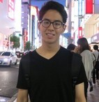
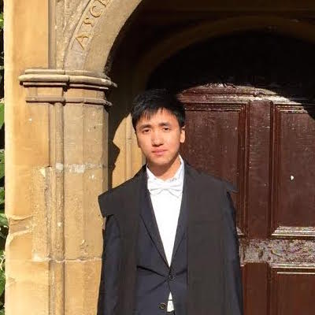

Group Members
Group Leader
Christopher Yau

I am a Reader in Computational Biology based in the Centre for Computational Biology at the University of Birmingham and a Fellow at the Alan Turing Institute. I was previously Associate Professor in Applied Statistics Genomics at the Wellcome Trust Centre for Human Genetics at the University of Oxford where I was a Group Leader at the Wellcome Trust Centre for Human Genetics. Prior to this, I was a Lecturer in Statistics in the Department of Mathematics at Imperial College. Hear me talk about my research and interests: Oxford-Stanford Big Data and Academy of Medical Sciences
Postdocs
Anas Rana
Anas obtained his PhD in Computational Biology from the University of Warwick before taking up a postdoc at the University of Oxford. He is now an MRC Research Fellow at the University of Birmingham.
Grad Students
Alejandra Avalos Pacheco

Ale is a final year PhD student on the joint CDT programme between the University of Warwick and the University of Oxford (OxWASP). She is currently working on statistical methods for genomic data analysis with Dr David Rossell (Barcelona) and Dr Richard Savage (Warwick)..
Zhiyuan Hu

Zhiyuan is a third year Oxford CSC-NDM Prize student working on single cell methods for understanding the function of SOX2 in ovarian cancer. She also works on computational methods for understanding the role of nonsense mediated decay in cancer. She is jointly supervised by Professors Ahmed Ahmed.
Kaspar Martens

Kaspar is a third year Oxford OxWASP student working on multi-view learning problems. He is an R enthusiast and runs the local Oxford R Users group with Kieran. He is jointly supervised with Professor Chris Holmes.
Leon Law

Leon is a third year Oxford OxWASP student is working on kernel methods for structured data problems. He is jointly supervised by Associate Professor Dino Sejdinovic.
Yun Feng

Yun is a second year Oxford NDM-CRUK Prize student working on rectal cancer genomics. He is jointly supervised by Professor Ian Tomlinson.
Nadia Jankovicova

Nadia is a Warwick-based Mathematics for Real World Systems Centre for Doctoral Training student. She will be based in the group in Summer 2017 working on interpretability of black box analytics. She is jointly supervised by Dr Richard Savage (Warwick).
Toju Sillo

Toju is a clinical fellow studying for a PhD at the University of Birmingham jointly under the supervision of Professor Gary Middleton and Dr Andrew Beggs. She qualified from Medicine at the University of Oxford. She is currently a Specialist Registrar in GI Surgery.
Siyu Chen

Siyu is a visiting student from Nankai University in China. She is working on Gaussian Process based clustering of time series cellular imaging data from high-throughput genetic perturbation studies with Anas Rana and Manuel Banzhaf.
Ngoc (Trang) Le

Ngoc is a joint PhD student with Dr Francesca Cicarelli at Kings College London and the Crick Institute. Ngoc is funded by the EU-CONTRA training network and will be working on cancer evolution.
Alumni
Constantin Ahlmann-Eltze (2017)
Constantin was a visiting ERASMUS Masters student from the University of Heidelberg in Germany. He worked on dimensionality reduction problems for high-dimensional mixed data type observations.
Tammo Rukat (2015-2018)

Tammo was an Oxford SABS CDT student working on neural network based approaches for modelling biomedical data. Tammo was based at the Alan Turing Institute in 2017-18. His studentship was sponsored by Roche Data Science and he was jointly supervised by Dr Satu Nakhuri (Roche) and Professor Chris Holmes. He is now a Research Scientist at Amazon Berlin.
Kieran Campbell (2015-2018)

Kieran completed his PhD in 2017 working on pseudotemporal statistical models for gene expression analysis. He was jointly supervised with Dr Caleb Webber in the Department of Physiology, Anatomy and Genetics at Oxford. He is now a Banting Research Fellow at UBC.
Justina Zuraskiene (2015-2017)

Justina works on statistical methods for genomic data analysis. At Oxford, she has developed novel hierarchical clustering methods for single cell data and also nonparametric smoothing techniques for decoding Hidden Markov models. She obtained her PhD from the Systems Biology group at Imperial College London with Professor Michael Stumpf before joining the Yau group at the Wellcome Trust Centre for Human Genetics in Oxford. She is now a BRIDGE Fellow at the University of Birmingham.
Donatien Chedom-Fotso (2015-2017)

Doni was a joint postdoc with Professor Ahmed Ahmed in the Ovarian Cancer Laboratory at the University of Oxford. He worled on cancer genomics and evolutionary modelling in ovarian cancer. He developed a novel statistical approach for inferring the cellular prevalence of mutations using state-of-the-art long-read whole genome sequencing data. Doni is now Lead Data Scientist at The Rank Group..
Emma Pierson (2014-2015)

Emma completed her MSc by Research in Statistics in 2015 at the University of Oxford. Her research was on zero-inflated methods in single cell genomic data modelling. She is now completing a PhD at Stanford University.
Paul Kirk (2014-2015)

Paul was a postdoc in the group at the Wellcome Trust Centre for Human Genetics working on statistical methods for genomic analysis. He is now a Scientist at the MRC Biostatistics Unit in Cambridge.
Xiaole Zhang (2012-2014)
Xiaole completed his PhD in the Department of Mathematics at Imperial College London. His research is concerned with approximation inference methods in Bayesian Statistics, in particular, online variational methods for fitting Dirichlet Process Mixtures and Approximate Bayesian Computation techniques for Hidden Markov Models with intractable likelihood or transition densities. He was co-supervised by Ajay Jasra (NUS) and Nik Kantas (Imperial).